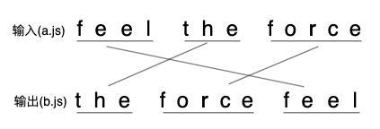

https://segmentfault.com/a/1190000020213957
为啥用sourceMap
这几天在搞前端错误日志，做过线上发布的都知道，我们发布到生产环境的代码，一般都有如下步骤：
- 压缩混淆，减小体积
- 多个文件合并，减少HTTP请求数
- 通过编译或者转译，将其他语言编译成JavaScript 这三个步骤，都使得实际运行的代码不同于开发代码，不管是 debug 还是捕获线上的报错，都会变得困难重重。
解决这个问题的方法，就是使用sourceMap。
啥是sourceMap
简单说，sourceMap就是一个文件，里面储存着位置信息。
仔细点说，这个文件里保存的，是转换后代码的位置，和对应的转换前的位置。
- 有了它，出错的时候，通过断点工具可以直接显示原始代码，而不是转换后的代码。
sourceMap长啥样
通过webpack等工具，我们可以使用 sourceMap，这里不细说配置方法，可以看这里
sourceMap是一个map文件，与源码在同一个目录下。

在压缩代码的最后一行，会有这样的一个引用：
//# sourceMappingURL=app.js.map
指向的就是我们的map文件。
sourceMap的格式如下：
{
version : 3, //SourceMap的版本，目前为3
sources: ["foo.js", "bar.js"], //转换前的文件，该项是一个数组，表示可能存在多个文件合并
names: ["src", "maps", "are", "fun"], //转换前的所有变量名和属性名
mappings: "AACvB,gBAAgB,EAAE;AAClB;", //记录位置信息的字符串
file: "out.js", //转换后的文件名
sourcesContent: ["\t// The module cache\n", "xxx"], //转换前的文件内容列表，与sources列表依次对应
sourceRoot : "" //转换前的文件所在的目录。如果与转换前的文件在同一目录，该项为空
}
其他的都很好解释，我们详细说一下mappings属性。
mappings
以"AACvB,gBAAgB,EAAE;AAClB;"为例:
- 每个分号对应转换后源码的一行；
- 每个逗号对应转换后源码的一个位置；
- AACvB代表该位置转换前的源码位置，以VLQ编码表示；
位置对应的原理
位置关系的保存经历了诸多步骤和优化，这个不详细说了，想看的可以看这里，我们只说最后的结果。
在每个位置中：
第一位，表示这个位置在【转换后代码】的第几列。 第二位，表示这个位置属于【sources属性】中的哪一个文件。 第三位，表示这个位置属于【转换前代码】的第几行。 第四位，表示这个位置属于【转换前代码】的第几列。 第五位，表示这个位置属于【names属性】的哪一个变量。
举例
假设现在有a.js，内容为feel the force，处理后为b.js，内容为the force feel

以the为例，它在输出中的位置是(0,0)，a.js是sources的第1个(这里只是举例)，输入中的位置是(0,5)，the是names的第2个(这里只是举例)。
那么映射关系为： 0 1 0 5 2
最后将 01052 表示为 Base64 VLQ 即可。
说明：
- 所有的值都是以0作为基数
- 第五位不是必需的，如果该位置没有对应names属性中的变量，可以省略第五位
- 每一位都采用VLQ编码表示，由于VLQ编码是可变长的，所以每一位可以由多个字符构成
- 为什么不保存转换后代码的行号，因为我们输出的文件总是一行，这样输出的行号就可以省略，因为都是0，没必要写出来
- 对于输出后的位置来说，到后边会发现它的列号特别大，为了避免这个问题，采用相对位置进行描述 相对位置是啥呢，看示意图：

第一次记录的输入位置和输出位置是绝对的，往后的输入位置和输出位置都是相对上一次的位置移动了多少，例如the的输出位置为(0,-10),因为the在feel的左边数10下才能到这个位置。
VLQ编码
VLQ是Variable-length quantity 的缩写，是一种通用的、使用任意位数的二进制来表示一个任意大的数字的一种编码方式。这种编码最早用于MIDI文件，后来被多种格式采用，它的特点就是可以非常精简地表示很大的数值，用来节省空间。
这种编码需要用最高位表示连续性，如果是1，代表这组字节后面的一组字节也属于同一个数；如果是0，表示该数值到这就结束了。
这样干巴巴说不太容易懂，还是举个栗子说明一下吧。
如何对数值137进行VLQ编码：
| 步骤 | 结果 |
|---|---|
| 将137改写成二进制形式 | 10001001 |
| 七位一组做分组，不足的补0 | 0000001 0001001 |
| 最后一组开头补0，其余补1 | 10000001 00001001 |
所以，137的VLQ编码形式为10000001 00001001
Base64 VLQ
与一般的VLQ的区别：
- 一个Base64字符只能表示 6bit(2^6)的数据
- Base64 VLQ需要能够表示负数，于是用最后一位来作为符号标志位。
- 由于只能用6位进行存储，而第一位表示是否连续的标志，最后一位表示正数/负数。中间只有4位，因此一个单元表示的范围为[-15,15]，如果超过了就要用连续标识位了。
表示正负的方式：
如果这组数是某个数值的VLQ编码的第一组字节，那它的最后一位代表"符号"，0为正，1为负； 如果不是，这个位没有特殊含义，被算作数值的一部分。 我们再来举个栗子说明下使用方法。
如何对数值137进行Base64 VLQ编码：
| 步骤 | 结果 |
|---|---|
| 将137改写成二进制形式 | 10001001 |
| 127是正数，末位补0 | 100010010 |
| 五位一组做分组，不足的补0 | 01000 10010 |
| 将组倒序排序 | 10010 01000 |
| 最后一组开头补0，其余补1 | 110010 001000 |
| 转64进制 | y和I |
所以 137 通过Base64 VLQ表示为yl
可以看出：
- 在Base64 VLQ中，编码顺序是从低位到高位
- 而在VLQ中，编码顺序是从高位到低位